한줄 요약 — 버킷 위치를 강제로 추종하지 않고 관입·끌기·닫기 단계의 말단 힘·토크를 명령해 토질에 따라 penetrate-and-drag 또는 penetrate-and-rotate 운동이 자연히 나오게 하고, 공격점 반복계획으로 목표 지형을 만들었으나 대형 장애물과 12톤 실차 검증은 후속 과제로 남겼다.
1.연구 배경 및 동기
예측 불가능한 토양저항을 위치오차가 아니라 힘명령으로 받아들이기
굴착 중 도구-토양 상호작용력은 팔 자체를 움직이는 힘보다 클 수 있고, 토질 조성·입도·수분·밀도·뿌리·돌에 따라 같은 구역 안에서도 급변한다. 이를 미리 측정하는 센서는 없으며 FEE나 Mohr-Coulomb 기반 추정은 일반적으로 20~30% 오차가 있거나 계산에 수 시간이 걸려 실시간 계획에 쓰기 어렵다. 위치궤적을 고집하면 단단한 흙에서 요구힘이 액추에이터 한계를 넘어가므로 매우 보수적 경로 또는 복잡한 토양모델이 필요하다.
논문은 단일 굴착을 버킷 위치궤적 대신 말단 힘·토크의 시간순서로 정의한다. 같은 힘을 연한 흙에 적용하면 깊게 관입하고 짧게 회전하며, 단단한 흙에서는 얕게 관입한 뒤 길게 끌게 된다. 이는 숙련 운전자가 토질에 맞춰 쓰는 penetrate-and-rotate와 penetrate-and-drag 전략을 기계적으로 재현한다. 여기에 유압 실린더 한계를 다루는 계층형 전신 제어와 목표 고도오차에서 다음 공격점을 고르는 반복 계획을 연결해 한 번의 버킷 채움에서 전체 지형 시공으로 확장한다.
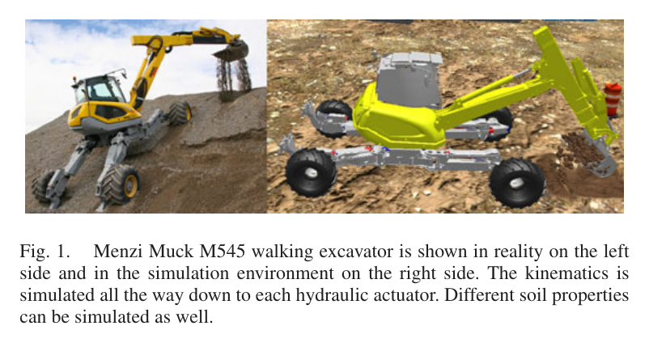
원문 Figure 1 · PDF p.2 — Fig. 1. Menzi Muck M545 walking excavator is shown in reality on the left side and in the simulation environment on the right side. The kinematics is simulated all the way down to each hydraulic actuator. Different soil properties can be simulated as well.
선행 연구의 한계
기존 위치궤적 기반 굴착은 예상 밖 토양에서 힘포화가 생기고, 이를 피하려면 보수적 경로나 정확한 토양모델이 필요했다.
impedance·disturbance observer 방식은 특정 토질 또는 단일 pass 위치추종 중심이었고, 마지막 얇은 층에서 효율이 떨어졌다.
LUCIE·ALS·THOR의 규칙·행동기반 제어는 전문가 행동을 많이 수작업 부호화하며 임의 목표 지형으로 연결되는 일반 계획구조가 부족했다.
토양파라미터 온라인 추정은 변화가 빠른 현장에 비해 부정확하거나 계산이 느려 폐루프 굴착의 핵심 모델로 쓰기 어려웠다.
이 연구의 기여
관입-끌기-닫기의 말단 힘·토크 궤적과 상태전환 조건으로 토양모델 없이 버킷을 채우는 단일 굴착 사이클을 설계했다.
동역학, 실린더 힘·속도·스트로크, 말단운동을 우선순위화하고 여유자유도로 방향 힘 조작성(manipulability)을 높이는 계층형 최적화 제어기를 제시했다.
목표면 근처에서 힘크기를 단순 감쇠하지 않고 힘벡터 방향을 회전해 stick-slip 없이 목표 형상 침범을 줄였다.
2.5D 현재·목표 고도에서 안정한 최대경사를 유지하도록 공격점을 골라 힘굴착과 위치정삭을 반복하는 다중 굴착 계획기를 만들었다.
Vortex에서 토질 적응, 액추에이터 한계 처리, 곡선·경사 트렌치의 지형오차와 굴착효율을 정량 평가했다.
2.방법론 및 시스템 구성
제어 대상은 Menzi Muck M545의 캐빈 선회, 붐, 디퍼, 텔레스코픽, 삽으로 구성된 5-DoF 팔이며 말단 task space는 캐빈 상대 x-z 위치, 삽 pitch, 세계기준 cabin yaw의 4차원이다. 한 자유도 여유를 이용해 힘을 내야 하는 방향의 조작성을 높인다. 매 제어주기 계층형 QP가 동역학을 최우선으로 만족하고 실린더 힘·속도·위치한계, 말단 motion, 방향 manipulability를 순서대로 처리한다.
상위 작업기는 CAD 목표를 0.2 m Grid Map으로 만들고 현재 고도와 차이를 계산한다. 임계치보다 높은 셀 중 고도오차와 굴착기 거리의 가중합이 최대인 위치를 공격점으로 고르되, 미완성 경계가 수직벽이 되지 않도록 최대경사 조건을 둔다. 힘제어로 거친 형상을 만든 뒤 모든 셀이 θ+ 이내가 되면 얇은 잔여층을 목표면 위치·경사로 추종하는 정삭단계로 바꾼다.
처리 파이프라인
1
계층형 팔 최적화
해 변수는 목표 관절가속도와 힘이다. 질량행렬·코리올리·중력·외력으로 EoM을 묶고 실린더 힘, 밸브유량에서 오는 속도, 스트로크 위치를 부등식으로 강제한다. 그 아래에서 말단 motion과 힘방향 manipulability gradient를 추종한다.
2
관입 단계
계획된 공격점에서 버킷 각도를 지형경사에 맞추고 -z 힘을 준다. x와 cabin yaw는 PID로 유지한다. z속도가 임계치 아래로 떨어지면 더 이상 관입하지 못한 것으로 판단해 drag로 전환하며 목표면 거리 d≤θ에서는 관입힘을 d/θ로 줄인다.
3
끌기 단계
굴착기 방향의 -x와 하향 -z 힘을 적용하고 버킷 날 궤적으로 쓸린 토량을 적분한다. 추정 부피가 버킷 용량을 넘으면 close로 전환한다. 목표면 가까이에서는 힘크기를 줄이지 않고 지표 경사와 거리로 회전각 φ를 정해 힘벡터를 목표면 접선 쪽으로 돌린다.
4
닫기 단계
삽에 τ_close를 가하고 작은 하향력으로 낙토를 막는다. 위치를 구속하지 않아 돌 같은 방해물에는 순응하며, 삽이 정해진 세계각에 도달하면 사이클을 끝낸다.
5
공격점 계획
오차 Ze=Zact-Zdes에서 θ+보다 높은 셀만 선택하고 Zact+μd가 최대인 셀을 고른다. μ=tanα로 작업 진행면의 최대경사를 조절하며 실제 표면보다 v_offset 위에서 접근해 계획셀을 충분히 제거한다.
6
거친 굴착과 정삭
상태기가 공격점 계산-힘굴착-지도갱신을 반복한다. 전체 오차가 θ+보다 작아지면 버킷이 목표 고도와 경사를 위치추종해 정삭한다. 흙을 채워야 하는 목표는 유사한 방식으로 dump point를 선택할 수 있다.
원문 수식과 의미
계층제어 운동방정식
[-M\; I]x_d=b+g+J^Tf_t^{des}
목표 관절가속도와 일반화힘을 하나의 해 벡터로 두고 말단힘을 포함한 굴착기 강체동역학을 최우선 등식으로 만족한다.
방향 힘 조작성
m(q)=(u^TQ(q)u)^{-1/2}
비대칭 실린더 힘한계를 말단 force ellipsoid로 옮긴 뒤 원하는 힘방향 u에서 낼 수 있는 크기를 여유자유도로 높인다.
임계치보다 높은 셀 중 실제고도와 장비거리 항을 최대화해 멀리서부터 파되 미완성 면의 경사를 α 이하로 유지한다.
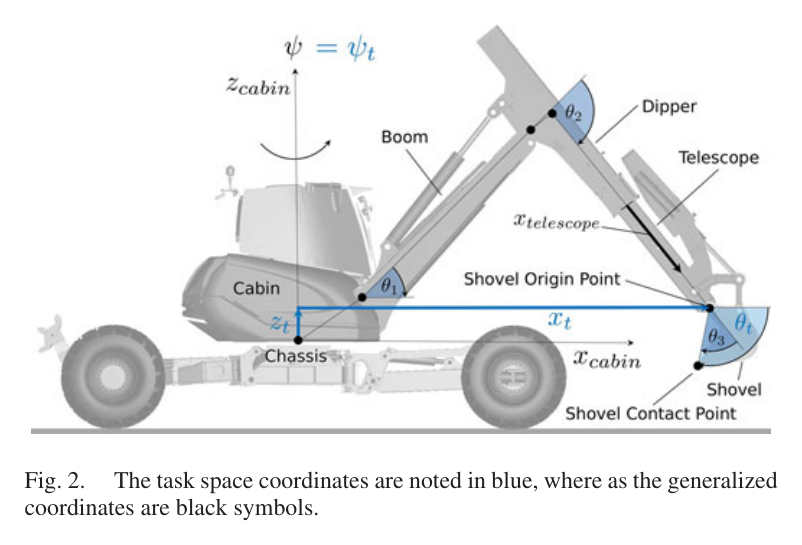
원문 Figure 2 · PDF p.2 — Fig. 2. The task space coordinates are noted in blue, where as the generalized coordinates are black symbols.
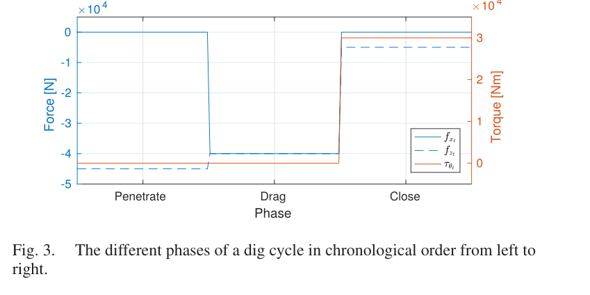
원문 Figure 3 · PDF p.3 — Fig. 3. The different phases of a dig cycle in chronological order from left to right.
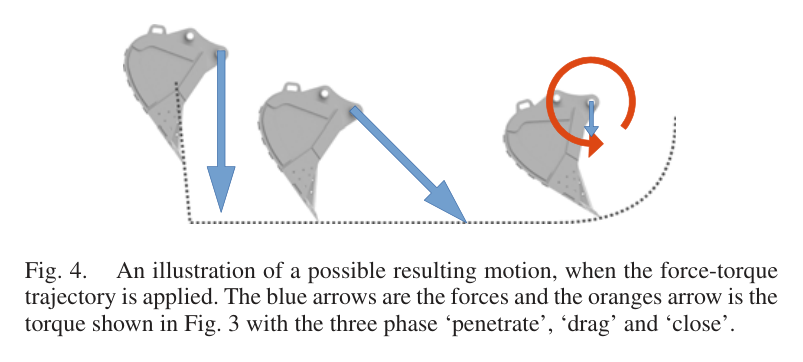
원문 Figure 4 · PDF p.3 — Fig. 4. An illustration of a possible resulting motion, when the force-torque trajectory is applied. The blue arrows are the forces and the oranges arrow is the torque shown in Fig. 3 with the three phase ‘penetrate’, ‘drag’ and ‘close’.
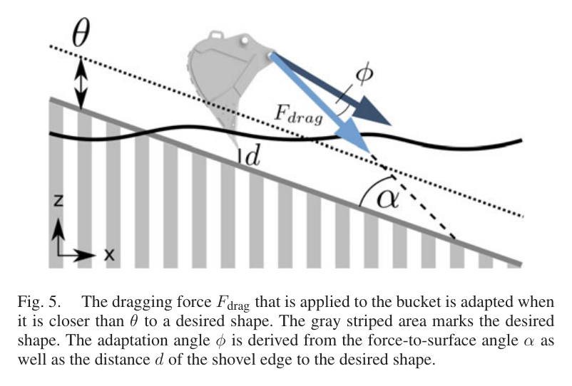
원문 Figure 5 · PDF p.4 — Fig. 5. The dragging force Fdrag that is applied to the bucket is adapted when it is closer than θ to a desired shape. The gray striped area marks the desired shape. The adaptation angle φ is derived from the force-to-surface angle α as well as the distance d of the shovel edge to the desired shape.
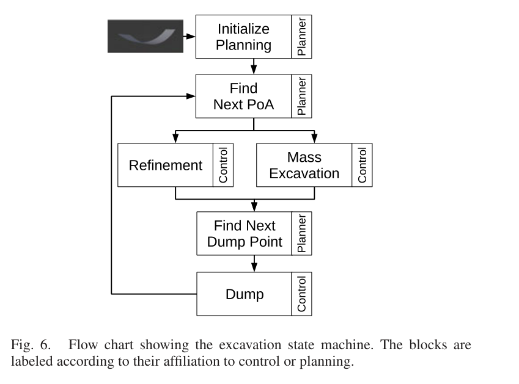
원문 Figure 6 · PDF p.5 — Fig. 6. Flow chart showing the excavation state machine. The blocks are labeled according to their affiliation to control or planning.
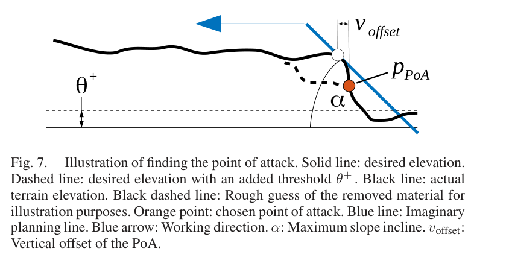
원문 Figure 7 · PDF p.5 — Fig. 7. Illustration of finding the point of attack. Solid line: desired elevation. Dashed line: desired elevation with an added threshold θ+ . Black line: actual terrain elevation. Black dashed line: Rough guess of the removed material for illustration purposes. Orange point: chosen point of attack. Blue line: Imaginary planning line. Blue arrow: Working direction. α: Maximum slope incline. voffset: Vertical offset of the PoA.
3.핵심 기술
토질이 운동을 결정하도록 허용하는 힘·토크 굴착
제어기는 버킷 경로를 강제하지 않고 공격적인 힘을 순서대로 가한다. 연한 clay는 깊게 관입해 drag가 짧고 단단한 loam은 얕게 관입해 길게 끈다. 속도·충전부피로 상태를 바꾸며, 목표면 근처에서는 stick-slip을 피하려 힘벡터를 회전한다.
penetrate/drag/close 3상태
속도 기반 관입종료
swept-volume 기반 충전판정
거리·경사 기반 force rotation
유압한계와 힘 조작성을 함께 다루는 계층형 QP
실린더 힘은 자세와 extension/retraction 유효면적에 따라 달라진다. 제어기는 이를 E(q)와 비대칭 force ellipsoid로 표현하고 속도·스트로크 한계를 추종보다 먼저 지킨다. 5-DoF/4D task의 여유자유도는 목표 힘방향 manipulability를 높이는 데 쓴다.
EoM 최우선
힘·속도·스트로크 부등식
4D task/5D joint redundancy
directional force manipulability
목표고도 오차를 줄이는 경사제약 반복계획
먼 셀부터 무조건 파면 완료 경계에 높은 벽이 생긴다. 실제높이에 거리항 μd를 더한 규칙은 최대경사 α를 유지하고, 수직 offset은 목표셀을 남기지 않게 한다. 힘굴착 후 오차가 θ+=0.2 m 안에 들면 position refinement로 전환한다.
Grid Map 0.2 m
θ+=0.2 m rough/refine 전환
μ=0.75·v_offset=0.3 m
CAD 목표 고도 기반
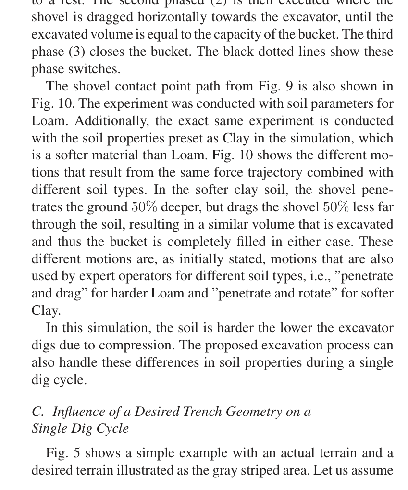
원문 Figure 5 · PDF p.7 — Fig. 5 shows a simple example with an actual terrain and a desired terrain illustrated as the gray striped area. Let us assume
4.실험 결과
실험 환경·장비·데이터
Menzi Muck M545 5-DoF 팔과 유압 액추에이터까지 모델링한 Vortex 시뮬레이션을 사용했다. 논문 내 결과는 모두 simulation이며 실차 practical test는 향후 과제다.
Loam과 더 연한 Clay soil preset, 0.2 m 해상도 2.5D Grid Map, 용량 0.580 m³ 버킷을 사용했다.
공중에서 팔을 거의 완전신장 후 수축시키며 위치·속도 한계 task를 끈 경우와 켠 경우의 x 추종오차를 비교했다.
동일 힘궤적을 Loam과 Clay에 적용해 관입깊이·drag 거리와 버킷 충전이 토질에 따라 자연히 변하는지 관찰했다.
목표면 가까운 공격점에서 force rotation이 -45 kN 관입력을 낮추고 drag 방향을 조절하는 과정을 시간신호로 확인했다.
곡선바닥 트렌치는 16회 force dig 후 4회 refinement, 양측경사 선형 트렌치는 별도 반복작업으로 완성했다.
비교 기준
계층제어에서 실린더 위치·속도 한계 task를 비활성화한 제어기
동일 force trajectory의 Loam 대 Clay 토질 조건
목표면 영향이 없는 원형 force trajectory 대 목표면 근접 시 회전·감쇠된 force trajectory
평가 지표
공중 x 위치 평균추종오차
토질별 관입깊이와 drag 거리의 상대변화
목표 고도 대비 셀 평균 height error
dig당 compacted error-volume 감소와 버킷 용량 대비 충전량
rough dig와 refinement 횟수
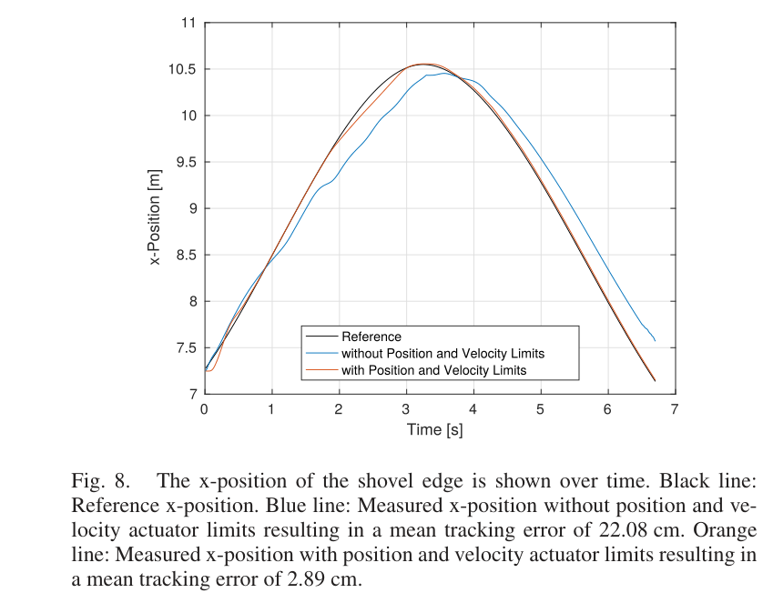
원문 Figure 8 · PDF p.6 — Fig. 8. The x-position of the shovel edge is shown over time. Black line: Reference x-position. Blue line: Measured x-position without position and ve- locity actuator limits resulting in a mean tracking error of 22.08 cm. Orange line: Measured x-position with position and velocity actuator limits resulting in a mean tracking error of 2.89 cm.
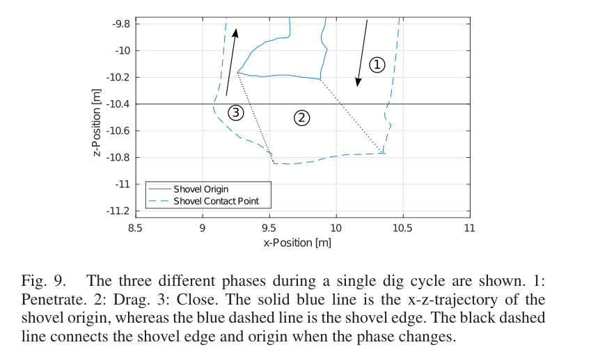
원문 Figure 9 · PDF p.6 — Fig. 9. The three different phases during a single dig cycle are shown. 1: Penetrate. 2: Drag. 3: Close. The solid blue line is the x-z-trajectory of the shovel origin, whereas the blue dashed line is the shovel edge. The black dashed line connects the shovel edge and origin when the phase changes.
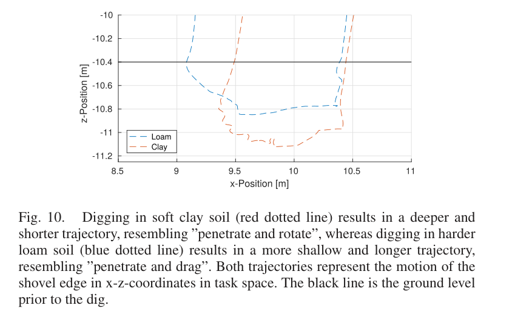
원문 Figure 10 · PDF p.6 — Fig. 10. Digging in soft clay soil (red dotted line) results in a deeper and shorter trajectory, resembling ”penetrate and rotate”, whereas digging in harder loam soil (blue dotted line) results in a more shallow and longer trajectory, resembling ”penetrate and drag”. Both trajectories represent the motion of the shovel edge in x-z-coordinates in task space. The black line is the ground level prior to the dig.
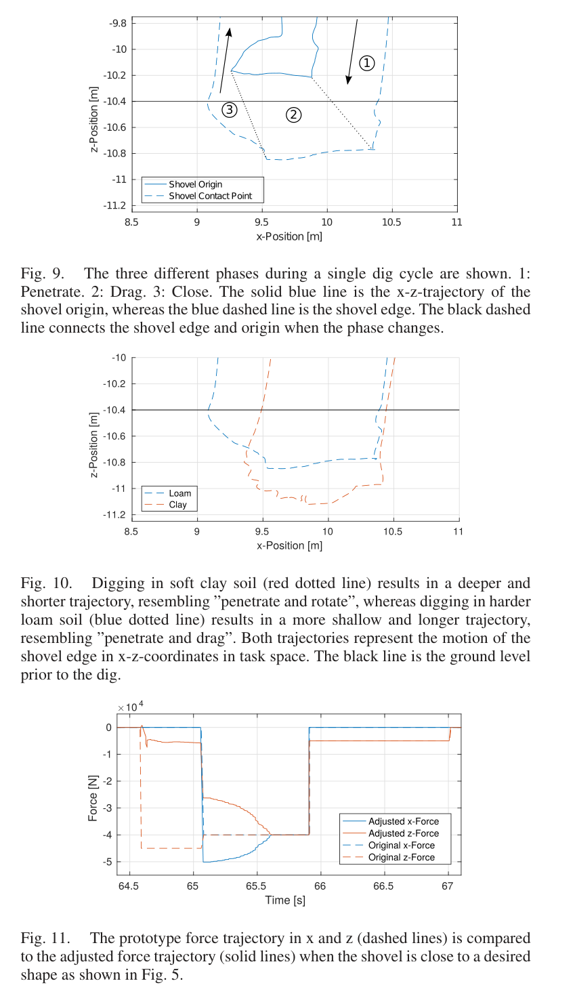
원문 Figure 11 · PDF p.6 — Fig. 11. The prototype force trajectory in x and z (dashed lines) is compared to the adjusted force trajectory (solid lines) when the shovel is close to a desired shape as shown in Fig. 5.
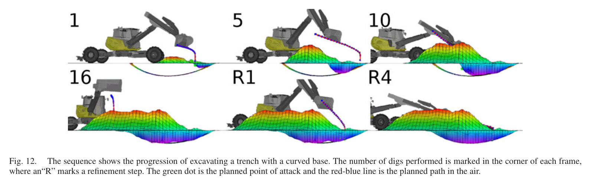
원문 Figure 12 · PDF p.7 — Fig. 12. The sequence shows the progression of excavating a trench with a curved base. The number of digs performed is marked in the corner of each frame, where an“R” marks a refinement step. The green dot is the planned point of attack and the red-blue line is the planned path in the air.
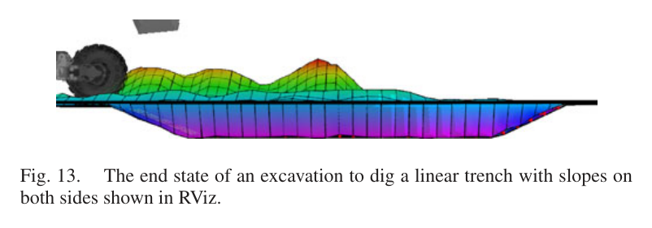
원문 Figure 13 · PDF p.7 — Fig. 13. The end state of an excavation to dig a linear trench with slopes on both sides shown in RViz.
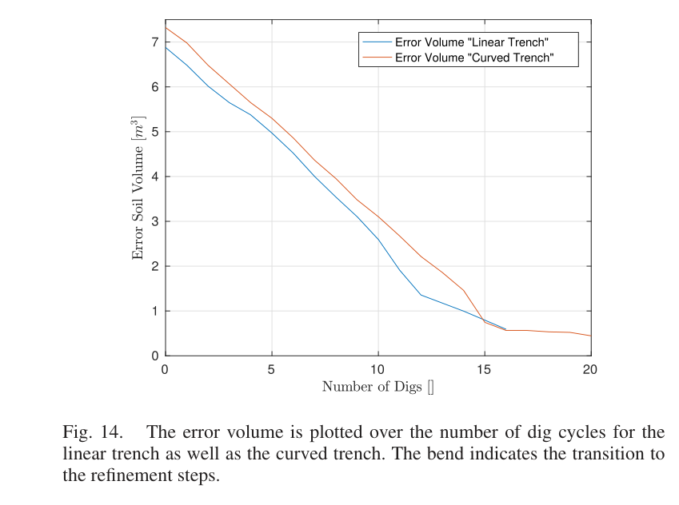
원문 Figure 14 · PDF p.8 — Fig. 14. The error volume is plotted over the number of dig cycles for the linear trench as well as the curved trench. The bend indicates the transition to the refinement steps.
핵심 결과 해석
팔 한계 task를 끄면 거의 완전신장 구간에서 기준을 따라가지 못해 평균 x 오차가 22.08 cm였다. 위치·속도 한계를 계층에 넣으면 여유자유도를 사용해 한계 접근을 피하고 평균오차가 2.89 cm로 87% 감소했다. apex 직전에는 여러 액추에이터가 동시에 포화돼 완전한 추종은 불가능했지만, 제어기가 피할 수 있는 구간을 최대화했다.
동일 힘궤적은 토질에 따라 다른 운동을 만들었다. 연한 Clay에서는 Loam보다 약 50% 더 깊게 관입하고 drag 거리는 약 50% 짧았지만 두 경우 모두 비슷한 토량으로 버킷을 채웠다. Loam 단일굴착은 약 0.4 m 관입 후 수평 drag와 close로 이어졌고, 목표면 근처 예제에서는 64.6~65.1 s 동안 관입력이 -45 kN에서 -5 kN으로 줄어 형상침범을 피했다.
곡선바닥 트렌치는 16회 거친 굴착과 4회 정삭 뒤 평균고도오차 3.47 cm, 양측경사 선형 트렌치는 4.41 cm를 달성했다. 거친 굴착구간의 error volume 감소는 두 작업 모두 약 0.440 m³/dig였다. Loam void ratio 1.4를 적용하면 이는 bucket 안에서 약 0.616 m³/dig에 해당해 0.580 m³ 용량보다 크며, 흙이 위로 쌓일 정도로 매 사이클 높은 충전효율을 냈다는 해석이다.
정량 결과
평가 항목
정량 결과
조건·맥락
원문 근거
한계 비인지/인지 팔 추종오차
22.08 cm→2.89 cm
거의 완전신장과 평균 1 m/s 공중 궤적
PDF p.6
한계 인지 제어 오차 감소율
87%
한계 비인지 22.08 cm에서 한계 인지 2.89 cm로 감소
PDF p.7
토질 적응
Clay 관입 약 50% 증가, drag 약 50% 감소
Loam과 동일 force trajectory 비교
PDF p.7
곡선 트렌치
16 dig + 4 refinement, 평균오차 3.47 cm
Vortex simulated curved-base trench
PDF p.7
양측경사 선형 트렌치
평균오차 4.41 cm
별도 Vortex simulation
PDF p.7
거친 굴착 생산량(다짐토)
0.440 m³/dig compacted
Loam void ratio 1.4; force-controlled digging의 평균 untouched-soil volume
PDF p.7
거친 굴착 버킷 환산량
0.616 m³/dig loosened
0.440×1.4 환산; simulation bucket volume 0.580 m³
PDF p.8
목표면 근접 관입력
-45 kN→-5 kN
64.6~65.1 s, desired shape 침범 회피
PDF p.7
실패 사례와 경계조건
여러 실린더가 동시에 한계에 닿는 완전신장 apex 부근에서는 계층제어도 기준 궤적을 정확히 따라갈 수 없다.
매설 대형돌이 drag를 막는 상황은 상태기 확장 아이디어만 제시했고 Vortex가 큰 지중장애물을 지원하지 않아 시험하지 못했다.
모든 결과가 simulation이므로 실제 유압마찰·압력노이즈·지반 불균질성과 버킷 충전 추정오차를 검증하지 않았다.
목표지형 mapping과 GPS·IMU·관절 state estimation은 실차 prototype 구상일 뿐 본 논문 실험에는 구현되지 않았다.
5.한계 및 향후 연구
현재 한계
제어·굴착·다중계획 결과가 모두 Vortex simulation이며 12 t 실차 검증이 없다.
큰 돌·뿌리처럼 버킷 운동을 멈추는 지중장애물을 simulator가 지원하지 않아 복구동작을 평가하지 못했다.
2.5D 고도지도와 soil preset을 사용해 실제 토질의 공간변동·붕괴·센서가림을 단순화했다.
버킷 충전부피는 날이 쓸고 간 지형으로 추정하므로 실제 낙토·압축·넘침에 따른 오차가 실증되지 않았다.
향후 연구
저자들이 구축 중인 force-controllable actuator, 전 관절센싱·측위를 갖춘 실물 Menzi Muck M545에서 전체 방법을 검증한다.
버킷 속도정지를 감시해 큰 장애물을 탐지하고 여러 pass로 아래를 파서 돌을 꺼내는 recovery state를 추가한다.
장애물이 목표깊이 아래까지 이어지면 계획기의 dump 기능으로 생긴 hole을 다시 메우는 복구작업을 실험한다.
실차 LiDAR 고도지도와 위치추정 불확실성을 공격점 선택·정삭 임계치에 반영한다.
토질·압력 관측을 활용해 force parameter와 상태전환 임계치를 온라인 적응시키되 토양모델 독립성을 유지한다.
6.한마디로 정리
핵심 방법은?
3상 force trajectory, 유압한계·힘조작성 계층제어, 목표고도 기반 공격점·정삭 반복계획을 결합했다.
핵심 결과는?
Vortex에서 토질별 운동이 자연 적응했고 곡선 트렌치 3.47 cm, 경사 트렌치 4.41 cm 평균오차를 냈다.
한계는?
실차가 아닌 simulation이며 매설장애물 복구, 실제 mapping·측위·충전추정과 토질 다양성은 검증하지 않았다.
#제어·MPC#작업·궤적계획#힘·토크 궤적#계층형 최적화#반복 굴착 계획
나의 의견 / 우리 연구와의 연관성
이 논문은 토양을 정확히 식별한 뒤 최적 위치궤적을 계산하려는 순서를 뒤집는다. 기계가 안전하게 낼 수 있는 힘을 먼저 설계하고, 실제 토양이 만든 버킷 운동을 상태전환과 지도갱신으로 받아들인다. 토질모델 오차가 큰 현장에서는 견고한 단일 dig primitive와 반복적인 지형피드백을 결합하는 편이 실용적이라는 설계원칙을 제공한다.
후속 자율굴착기는 이 힘 primitive를 압력센서 기반 접촉상태, 불확실성 고도지도, 장애물 복구와 연결해야 한다. 상위 계획은 목표형상과 안정한 작업면을 관리하고 하위 제어는 actuator limit와 force capability를 보장하는 계층분리가 핵심이다. 2019 실차 자유형 트렌칭 연구가 바로 이 시뮬레이션 구조에 지도·경로·상태기 하드웨어를 더한 연속선상에 있다.
정확한 soil parameter 없이 압력·속도 피드백으로 force primitive를 실행하면 토질변화에 대한 모델의존도를 낮출 수 있다.
공격점 규칙의 최대경사 α는 트렌치 붕괴·상단 충돌을 줄이는 작업면 안전제약으로 현장계획기에 직접 반영할 수 있다.
rough force dig 뒤 얇은 층만 position refinement하는 이중모드는 생산성과 형상정밀도를 분리 최적화한다.
실차에서는 속도정지·압력급증·지도 비수렴을 failure detector로 묶어 돌 회피, 재공격, hole backfill 상태를 추가해야 한다.
7.전체 그림·표
본문 핵심 위치에 배치하지 않은 원문 Figure와 Table을 원문 페이지 순서로 수록한다.
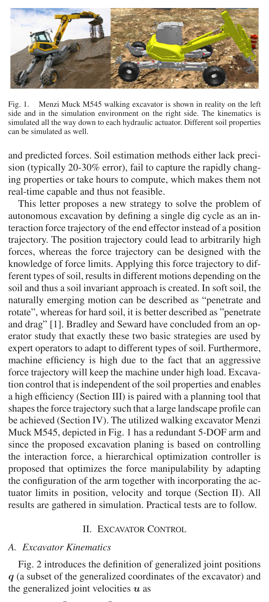
원문 Figure 2 · PDF p.2 — Fig. 2 introduces the definition of generalized joint positions q (a subset of the generalized coordinates of the excavator) and the generalized joint velocities u as
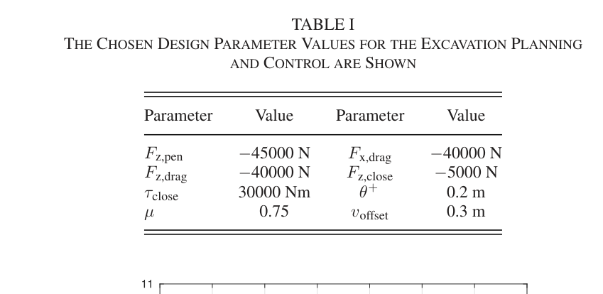
원문 Table I · PDF p.6 — TABLE I THE CHOSEN DESIGN PARAMETER VALUES FOR THE EXCAVATION PLANNING